Chapter Five
Art and Models
Character design, creature concepts, ink work, effects and the 3D models that end up in the games. Click any still to see it full size.
Effects
Two effects pieces, each built to a two colour rule so the whole thing reads as one idea however much is on screen at once.
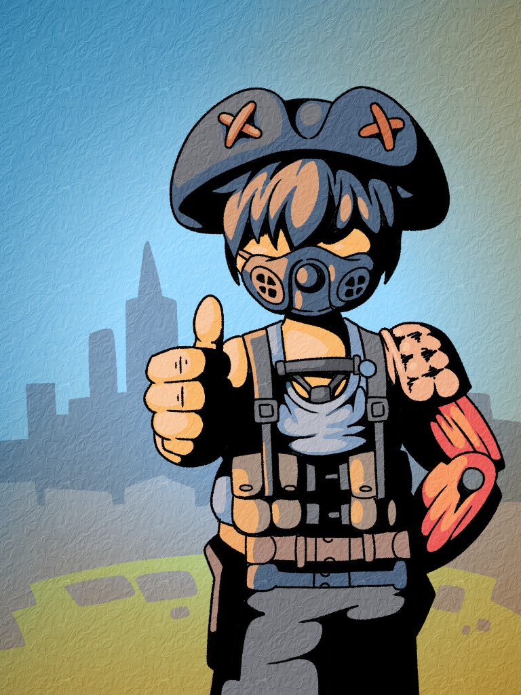
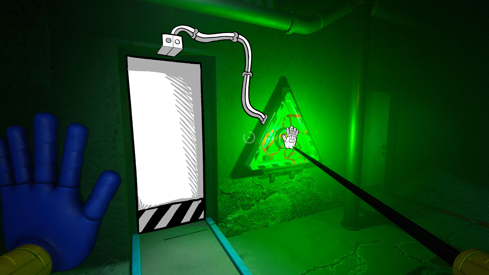
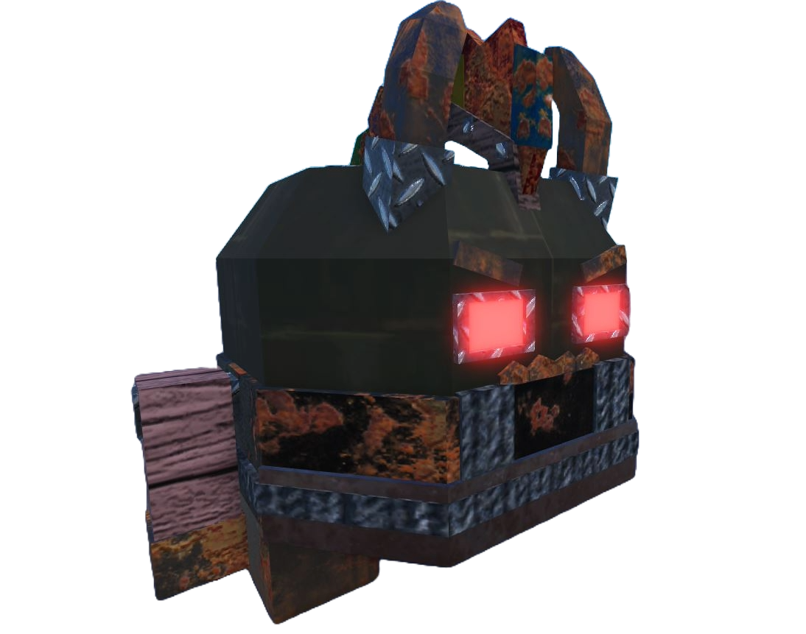
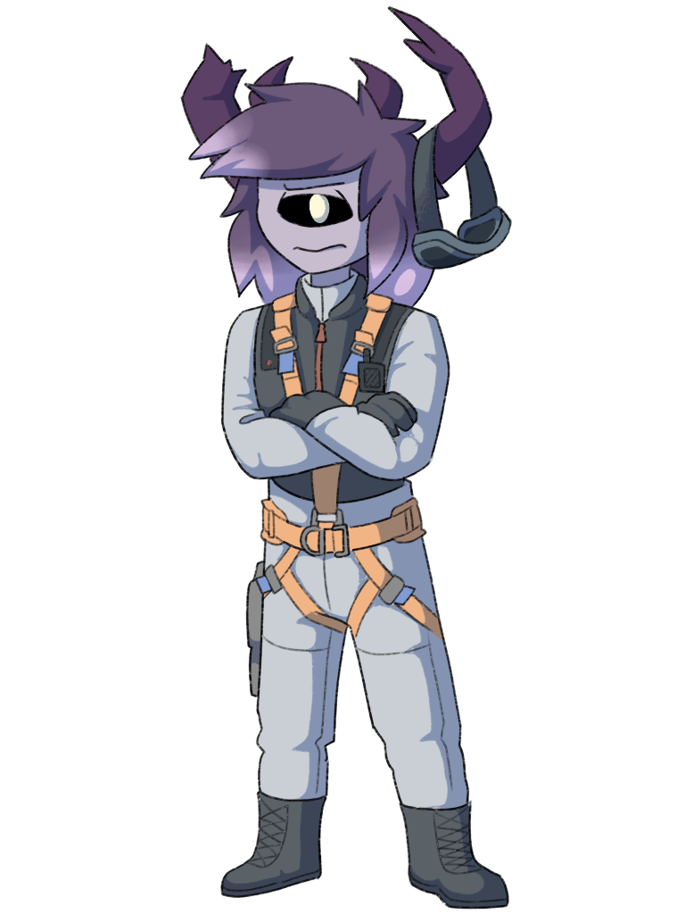
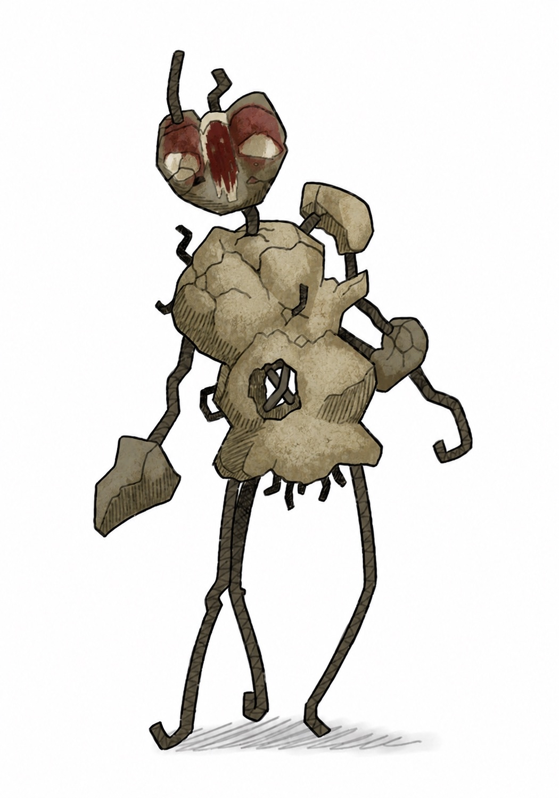
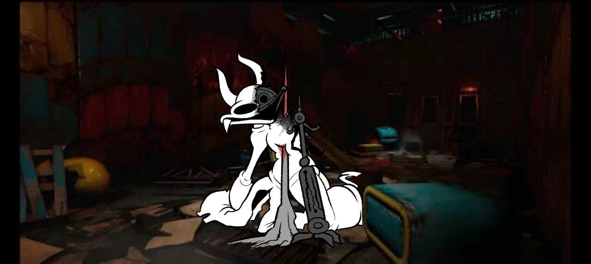
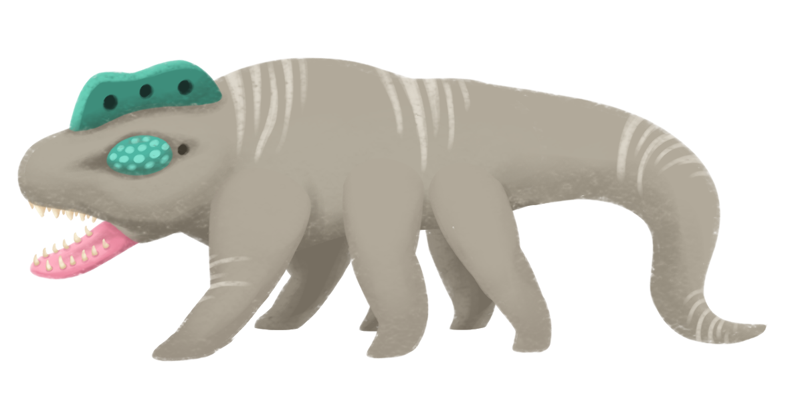
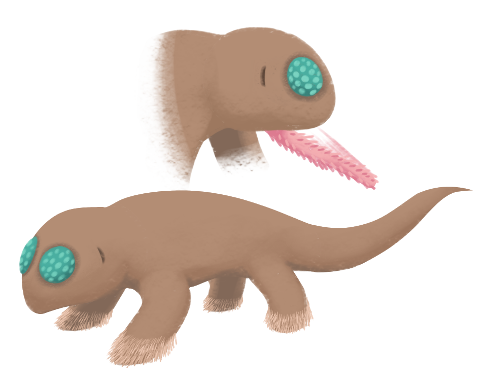
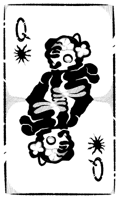
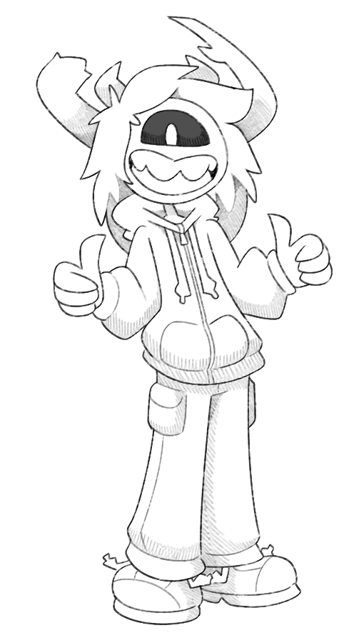
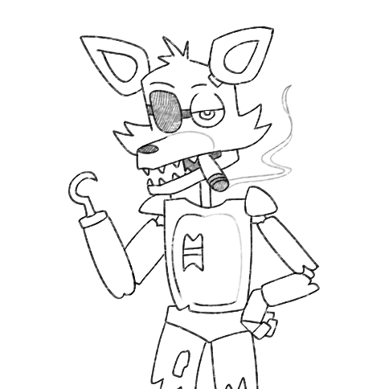
From sketch to model to code
Drawing and modeling are not a side hobby next to the programming, they are the reason I can take a creature the whole way. A concept becomes a model, the model gets rigged, and then I write the code that makes it move and fight. Nothing gets lost in a handoff, because there is no handoff.